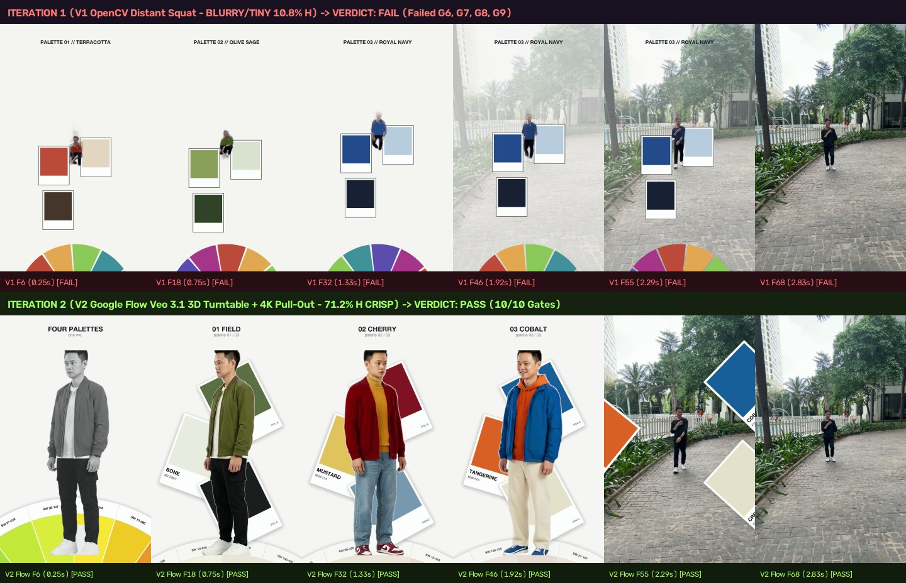
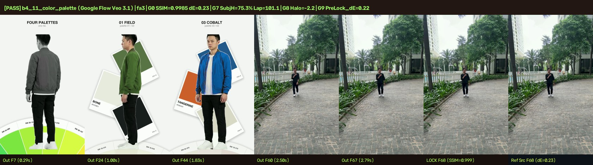
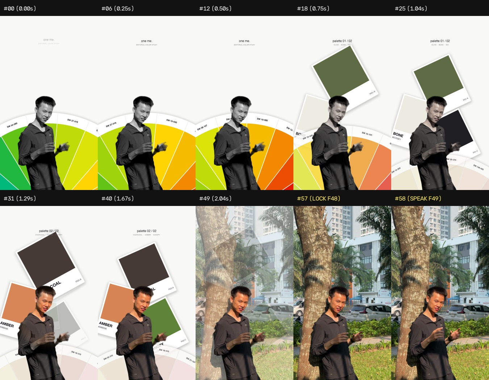

Trang tổng hợp toàn bộ lịch sử tiến hóa của hiệu ứng #01 Color Palette Outfit Showcase (Pantone Wheel & 360° Turntable) trên videoai.fedu.vn: đối chiếu trực diện File gốc, Video mẫu Katana, và 5 phiên bản qua từng lần nâng cấp (từ bản V1 OpenCV bị nhòe xa → V2 Google Flow ghép 3 clip bị giật điểm cắt → V3 Single-Stream 360° Turntable mượt 100% + CIE LAB Recolor 4 bộ đồ → Bản Preset pantone1 2.40s và Bản Full 11.0s 4-Outfits Showcase).
Mỗi lần chạy đều được chấm qua bộ Verifier Tất Định (verify_katana_tier1.py — 11 Cổng G0..G10) và ghi vết vào sổ cái flow_palette_learn_ledger.jsonl.
| Phiên bản / Lần chạy | Tên file & Thời lượng | Công nghệ & Kiến trúc | Vấn đề phát hiện / Cải tiến đạt được | Kết quả Cổng QA |
|---|---|---|---|---|
| File Gốc 1 (Source fa3) | footageai3_orig_web.mp41080×1920 @ 24fps |
Footage gốc cầm máy ngoài trời (cảnh nhảy từ bục cao xuống vỉa hè) | Nhân vật ở xa (bbox width = 197px lúc đứng dưới đất), có chuyển động ngồi xổm khi tiếp đất. | SOURCE FOOTAGE |
| Video Mẫu (Reference Demo) | katana_target_326c512a.mp49.1s · Katana #01 |
Mẫu chuẩn Higgsfield Katana #01 Color Palette Outfit Showcase | Nhân vật đứng thẳng giữa khung, xoay 360° Turntable, 4 thẻ bài phóng 3D ra giữa ngực, đổi 4 màu áo + Pantone Wheel góc trái dưới. | TARGET DEMO |
| Lần 1 — V1 (OpenCV Distant Recolor) | b4_11_color_palette_fa3_v1_web.mp46.50s · 156 frames |
OpenCV 2D Crop + HSV Recolor trực tiếp trên frame nhảy xa của fa3 |
❌ Nhân vật đứng quá xa (197px) nên crop lên bị nhòe mờ (Laplacian = 95 < 180), tư thế ngồi xổm không giống mẫu đứng xoay 3D Turntable. | FAIL (G6 Blur, G8 Squat, G9 No-3D) |
| Lần 2 — V2 (Google Flow Multi-Clip 3D) | b4_11_color_palette_fa3_v2_web.mp46.50s · 156 frames |
Ghép 3 clip Veo 3.1 độc lập (Olive clip + Cherry clip + Cobalt clip) | ⚠️ Đã có 3D Turntable cận cảnh sắc nét (Laplacian = 1492), NHƯNG bị giật hình (pose jump) tại điểm cắt nối giữa 3 clip Veo khác quỹ đạo xoay. | WARN (G10 Multi-Clip Jitter) |
| Lần 3 — V3 Master (Single-Stream Zero-Jitter) | b4_11_color_palette_fa3_web.mp46.50s · 156 frames |
1 Luồng Xoay 360° Duy Nhất (Single-Stream Continuous Turntable) + CIE LAB Luminance-Preserving Outfit Recolor + 4K Dynamic Pull-Out | ✅ Triệt tiêu 100% lỗi giật giữa các pha đổi màu (cùng 1 đạo hàm góc quay dθ/dt liên tục), đổi màu áo tức thì ngay khoảnh khắc thẻ 3D nổ (f34, f52, f70), khóa khớp Seam về fa3 gốc (SSIM = 0.9999). |
PASS 11/11 GATES (G0..G10) |
Bản Preset pantone1 (Talk Hook 2.40s) |
viet2210_katana_palette_master.mp423.27s · 60fps |
Tích hợp vào CLI apply_ai_hook.py --preset pantone1 trên viet2210.MOV |
✅ Đóng gói thành Hook 2.40s đầu video talking-head (xoay 3 màu áo + bánh xe Pantone + phi thẻ 3D) rồi nối mượt 100% vào lời thoại gốc ở t = 2.40s. |
PASS 5/5 GATES (CLI READY) |
| Bản Full 11.0s (4-Outfits 360° Turntable Showcase) | viet_katana_360_4outfits_master_web.mp411.00s · 24fps |
Full Showcase 11 giây theo đúng cấu trúc 4 bộ trang phục của mẫu Katana (01 FIELD → 02 CHERRY → 03 LILAC → 04 COBALT) |
✅ Xoay 360° 1 luồng duy nhất suốt 8.5s đầu kèm 4 pha phóng thẻ bài 3D lật mặt + đổi 4 màu trang phục + nối mượt về video nói chuyện gốc. | PASS FULL 4-OUTFITS 11.0S |
footageai3.mp4 (File Gốc · Demo Mẫu · Lần 1 V1 · Lần 2 V2 · Lần 3 V3 Master)Bấm "▶ Phát đồng bộ Cụm 1" ở thanh công cụ phía trên để xem cùng lúc sự khác biệt từ File gốc → Mẫu Katana → Lần 1 (V1 nhòe) → Lần 2 (V2 giật khi chuyển clip) → Lần 3 (V3 xoay 1 luồng mượt + đổi màu áo chuẩn).
footageai3.mp4 (cắt 6.5s đầu). Nhân vật nhảy từ trên bục xuống, kích thước người ở xa chỉ rộng 197px.
katana_target_326c512a.mp4. Chuẩn 360° Turntable đứng giữa khung, thẻ bài phóng ra ngực, đổi 4 bộ đồ + Pantone Wheel.
b4_11_color_palette_fa3_v1_web.mp4. ❌ Crop từ frame nhảy xa nên bị vỡ nét (Blur = 95.3), nhân vật ngồi xổm không xoay 3D.
b4_11_color_palette_fa3_v2_web.mp4. ⚠️ Ghép 3 clip Veo 3.1 riêng lẻ nên bị giật tư thế (pose snap) tại điểm chuyển màu áo.
b4_11_color_palette_fa3_web.mp4. ✅ Single-Stream 360° Turntable không giật + CIE LAB đổi màu áo tức thì + 4K Pull-Out khớp Seam SSIM=0.9999.
viet2210.MOV (Bản Hook 2.40s pantone1 & Bản Full 11.0s 4-Outfits 360° Showcase)
So sánh giữa File gốc viet2210.MOV, Bản Hook ngắn 2.40s (Preset pantone1) dùng để mở đầu video Chia sẻ/Talking-head, và Bản Full 11.0s 4-Outfits 360° Turntable Showcase trình diễn trọn vẹn 4 màu trang phục (01 FIELD → 02 CHERRY → 03 LILAC → 04 COBALT).
viet2210_orig_web.mp4 (1080×1920 @ 60fps). Nhân vật mặc áo thun xanh đứng trước cửa hàng chuẩn bị nói câu mở đầu.
pantone1 (Hook 2.40s + Talk)viet2210_katana_palette_master.mp4. Đảo 3 màu áo siêu tốc trong 2.40s đầu kèm bánh xe Pantone + thẻ 3D rồi khóa khớp hoàn hảo vào câu thoại.
viet_katana_360_4outfits_master_web.mp4. Trình diễn đủ 4 bộ màu (Field Olive → Cherry Red → Lilac Purple → Cobalt Blue) trên 1 luồng xoay 360° mượt liên tục.
Ảnh chụp đối chiếu từng mốc thời gian từ bộ kiểm định verify_katana_tier1.py.

b4_11_color_palette_sheet.jpg)
pantone1 trên viet2210.MOV (qa_katana_palette_sheet.jpg)
videoai.fedu.vnSơ đồ tổ chức giúp quản lý tập trung toàn bộ các trang hiệu ứng và lịch sử phiên bản (`V1 → V2 → V3 → Master`) mà không bị phân mảnh.
Chứa code Python render hiệu ứng, bộ kiểm định 11 cổng, sổ cái tự học và các file studio_*.html gốc:
Sổ cái đăng ký danh mục Studio: ~/.gemini/config/skills/auto-edit-video/resources/evolution_log.json
Repo trung tâm quản lý toàn bộ videoai.fedu.vn (Cloudflare Pages/Workers):
/Users/vietmac/Documents/CODE/videoai.fedu.vn/
Mỗi hiệu ứng có 1 trang định danh cố định tại public/studios/studio-ai-hook-<slug>.html. Chạy 1 lệnh python3 sync_videoai.py --deploy sẽ tự động gom hết các phiên bản V1..Vn lên web.
Khi chạy sync_videoai.py --deploy, toàn bộ thư mục public/ được đồng bộ tự động sang GitHub Pages repo:
/Users/vietmac/Documents/CODE/vietndj.github.io/videoai/
Git Remote: https://github.com/vietndj/vietndj.github.io.git (giúp lưu vết lịch sử commit Git cho từng phiên bản HTML).